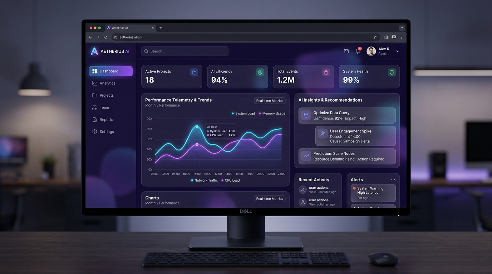

I build responsive, user-friendly websites with clean code and modern design.
I'm a Software Engineering undergraduate passionate about building modern web applications,
intelligent systems, and user-focused digital experiences. I love solving real-world problems
through clean code, creative thinking, and technology.
Software Engineer & FreelancerFrom Concept to Code, I Build Solutions That Matter.
LET'S CONNECT
10+
Completed Projects
2+
Years of Development
100%
Dedication to Clean Code
12+
Modern Tech Stacks
About Me
Driven by Innovation & Engineering Rigor
Bridging the gap between creative visual designs and resilient backend architectures.
My Background & Vision
I am a third-year Software Engineering undergraduate at SLIIT, passionate about building innovative,
intelligent, and user-focused software solutions. My experience spans full-stack web and mobile
development, RESTful API design, database management, and AI-powered application development.
Through projects such as TruthLens, an AI hallucination detection and verification system, I have gained
practical experience in building end-to-end applications, integrating AI services, designing system
architectures, and developing reliable backend solutions.
I enjoy transforming complex ideas into practical digital products, combining technical problem-solving
with thoughtful UI/UX design. I am particularly interested in artificial intelligence, modern software
architecture, and developing scalable applications that solve real-world problems.
As I continue to grow as an engineer, my goal is to strengthen my technical expertise, collaborate with
experienced developers, and contribute to impactful software projects through continuous learning and
innovation.
✔Strong foundation in Object-Oriented Programming, Data Structures & Algorithms, and software
design principles.
✔Experienced in building full-stack web and mobile applications, designing RESTful APIs, and
integrating AI-powered features.
✔Passionate about creating intuitive user experiences, writing maintainable code, and continuously
learning emerging technologies.
Key Information
Education
BSc (Hons) in Information Technology
Software Engineering · SLIIT
CGPA: 3.64
Technical Focus
Full-Stack Development & AI
Web, mobile & intelligent applications
Opportunities
Internships & Full-Time Jobs
Open to suitable opportunities
Work Mode
Onsite, Hybrid & Remote
Based in Sri Lanka
Open to Work · Internships & Jobs
Ready to contribute, collaborate, and grow through meaningful software engineering opportunities.
Capabilities
Technical Expertise & Toolkit
Tools and frameworks I use to engineer scalable, high-performance applications.
Featured Work
Selected Projects & Case Studies
A showcase of full-stack implementations, intelligent apps, and interactive UI
systems.

Intelligent Systems
TruthLens: AI Hallucination Detection
An intelligent AI hallucination detection and verification system featuring automated claim extraction,
multi-source evidence retrieval, and neural confidence scoring for LLM outputs.
Sleek decentralized wallet and multi-currency mobile banking platform with transaction visualization,
instant peer-to-peer transfers, and biometric security integration.
Clinical decision support dashboard that provides automated biomarker trend evaluations, medical imaging
visualizers, and predictive health trajectory models.
Academic journey and practical engineering endeavors.
Education
2023 - Present
BSc (Hons) in Information Technology
Software Engineering Specialization · Sri Lanka Institute of Information
Technology (SLIIT)
Focusing on Software Architecture, Data Structures, Distributed Computing, Database Management, and
Artificial Intelligence foundations (Current CGPA: 3.64).
2021 - 2023
Advanced Level - Physical Science Stream
Combined Mathematics, Physics & Information Technology
Developed analytical thinking, algorithmic problem solving, and rigorous computational logic skills.
Work Experience
August 2026 – Present
Research Assistant
Sri Lanka Institute of Information Technology (SLIIT)
Contributing to the development of a software application designed to improve first-year students’
English language proficiency and speaking skills.
Supporting the development of interactive learning features that help students strengthen their
academic communication and professional English.
Collaborating on software solutions that enhance students’ confidence in English speaking and
prepare them for academic and workplace communication.
Leadership & Community
Extracurricular Activities & Leadership
Active participation in technical workshops, hackathons, university volunteering, and
student leadership.
MS Club of SLIIT
DevOps Workshop Participant
Participated in a DevOps workshop to explore DevOps practices, tools, and modern software development
workflows.
SESC of SLIIT
CodeJam Hackathon Participant
Participated in CodeJam, a hackathon focused on problem-solving, creativity, and collaborative software
development.
MS Club of SLIIT
Mini Hackathon Participant
Participated in a mini hackathon, applying technical knowledge and teamwork to develop solutions within a
limited timeframe.
FSCS
Active Volunteer
Actively volunteered in student-focused initiatives and supported activities that contribute to the
university community.
FCSC
Study Support Session Facilitator
Conducted a study support session to help fellow students strengthen their understanding of academic
topics through peer learning and knowledge sharing.
SLIIT
Batch Representative
Represented batchmates by communicating student concerns, coordinating academic information, and
supporting communication between students and academic staff.
Recognition
Awards & Achievements
Academic excellence and honors received throughout my university studies.
Academic Excellence
Sri Lanka Institute of Information Technology (SLIIT)
Dean’s List Award – Year 1, Semester 2
Recognized for outstanding academic performance during the first year, second semester.
Get In Touch
Let's Build Something Extraordinary Together.
Have a project in mind, an internship opportunity, or want to discuss modern tech? Feel free to drop a
message!
Motivated and result-driven Software Engineering undergraduate with hands-on expertise in developing
full-stack web architectures, responsive interfaces, and intelligent systems. Skilled in React, Node.js,
Python, and SQL with a proven eye for design aesthetics and clean code practices.
Education
BSc (Hons) in Information Technology (Software Engineering)2023 - Present
Sri Lanka Institute of Information Technology (SLIIT) · CGPA: 3.64
Core coursework: Algorithms, Distributed Systems, Database Architectures,
OOP in Java, Web Technologies, Machine Learning.
Work Experience
Research AssistantAugust 2026 – Present
Sri Lanka Institute of Information Technology (SLIIT)
Contributing to the development of a software application designed to improve first-year students’
English language proficiency and speaking skills.
Supporting the development of interactive learning features that help students strengthen their
academic communication and professional English.
Collaborating on software solutions that enhance students’ confidence in English speaking and
prepare them for academic and workplace communication.
Extracurricular & Leadership
DevOps Workshop ParticipantMS Club of SLIIT
Participated in a DevOps workshop to explore DevOps practices, tools, and
modern software development workflows.
CodeJam Hackathon ParticipantSESC of SLIIT
Participated in CodeJam, a hackathon focused on problem-solving, creativity,
and collaborative software development.
Mini Hackathon ParticipantMS Club of SLIIT
Participated in a mini hackathon, applying technical knowledge and teamwork
to develop solutions within a limited timeframe.
Active VolunteerFSCS
Actively volunteered in student-focused initiatives and supported activities
that contribute to the university community.
Study Support Session FacilitatorFCSC
Conducted a study support session to help fellow students strengthen their
understanding of academic topics through peer learning and knowledge sharing.
Batch RepresentativeSLIIT
Represented batchmates by communicating student concerns, coordinating
academic information, and supporting communication between students and academic staff.
Awards & Achievements
Dean’s List Award – Year 1, Semester 2SLIIT
Sri Lanka Institute of Information Technology
Recognized for outstanding academic performance during the first year,
second semester.
Tools & Platforms: Git, GitHub, Docker, Postman, Figma, VS Code, Linux
Featured Projects
TruthLens: AI Hallucination Detection & Verification SystemPython, NLP, React, FastAPI
End-to-end AI hallucination verification system with automated claim
extraction, multi-source evidence cross-referencing, and backend pipeline architecture.
NexaPay Digital Banking & CryptoTypeScript, Web3, Express
Decentralized cryptocurrency and fiat transaction visualizer with modern
glassmorphism design.